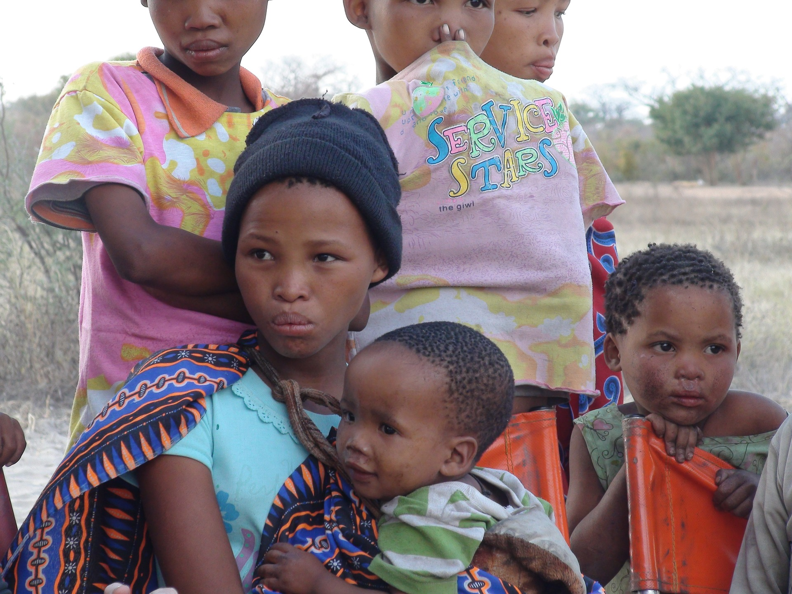

Ce programme de 10 jours vous propose de découvrir les incontournables de la Nation Arc-en-ciel. De la Réserve de Sabie Sand à la fabuleuse ville de Cape Town, découvrez en famille ce que l'Afrique du Sud a de mieux à offrir !
Réservez le voyage en Afrique du Sud de vos rêves

L'Afrique du Sud sportive
Cet itinéraire de 14 jours au coeur des plus beaux paysages d'Afrique du Sud saura satisfaire les sportifs ambitieux. Des plages de la côte sud au massif du Drakensberg, en passant par le Blyde River Canyon et la Wild Coast, vous serez transporté par ces paysages grandioses.

Ubuntu : Découvertes culturelles en Afrique du Sud
Ce voyage de 16 jours vous conduira au coeur de la nation Arc-en-ciel. Vous aurez l'opportunité de découvrir les traditions de certaines des nombreuses ethnies qui peuplent le pays et qui donnent au pays 12 langues officielles !